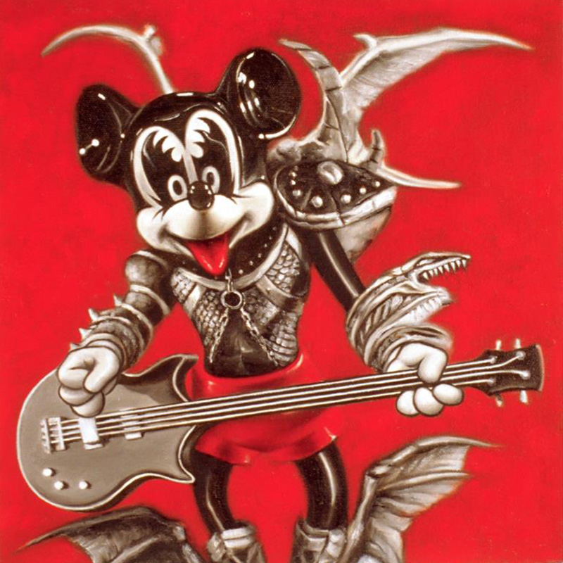
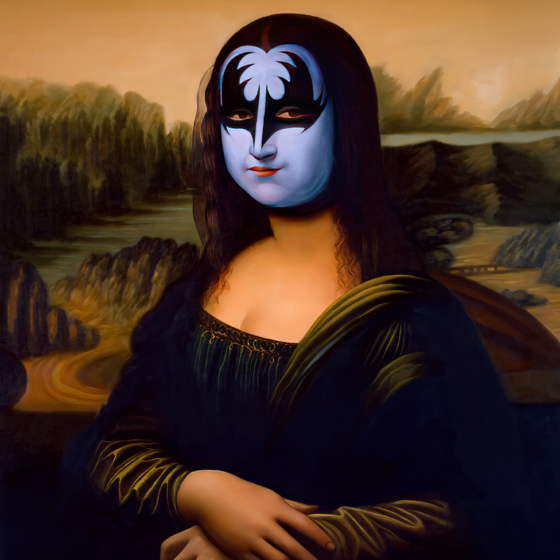
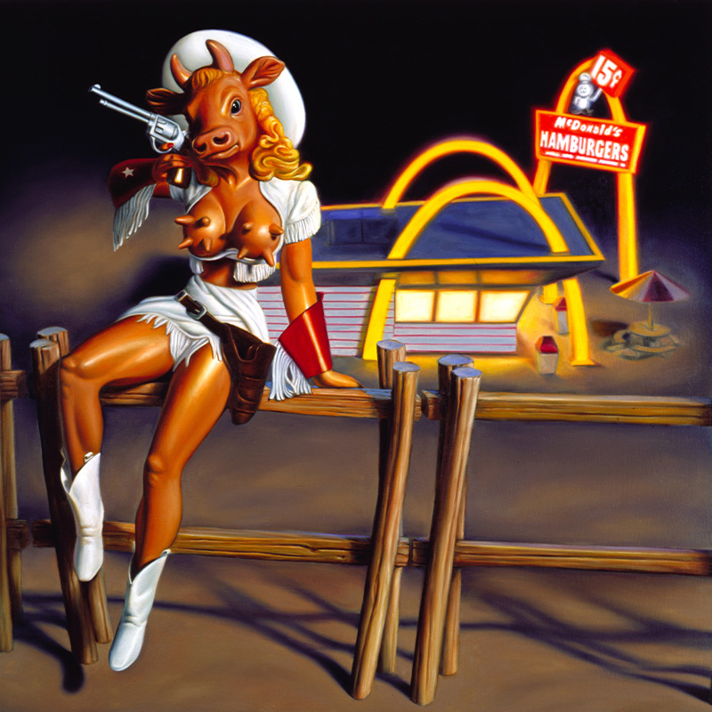
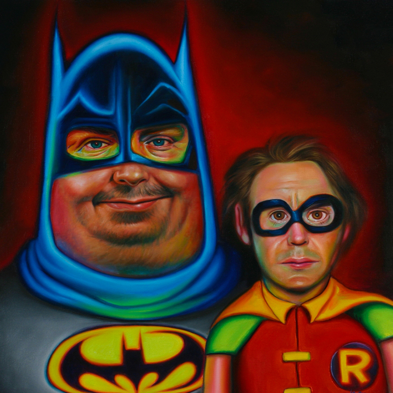

Decade overview
This page provides entry points to year-level catalogues for works presently documented within the 2000s. Years and records reflect the best available documentation at the time of publication. As additional primary sources and verified records emerge, entries may be added, revised, or reassigned.
Browse by year
Select a year to open the year catalogue and view individual entries, images, and notes.

2000
Open the 2000 year catalogue
2001
Open the 2001 year catalogue

2002
Open the 2002 year catalogue
2003
Open the 2003 year catalogue
2004
Open the 2004 year catalogue

2005
Open the 2005 year catalogue
2006
Open the 2006 year catalogue

2007
Open the 2007 year catalogue
2008
Open the 2008 year catalogue
2009
Open the 2009 year catalogue